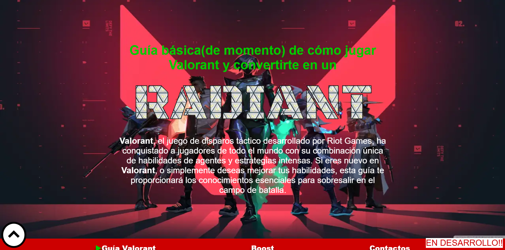
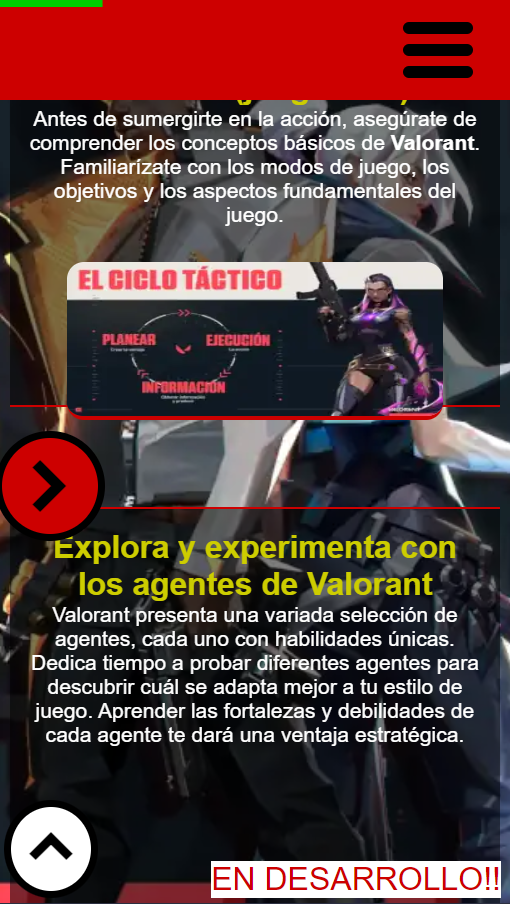

PROYECTOS


Página que enseña a cualquier jugador de valorant el nivel profesional del mismo (o ese seria el fin del proyecto). Click aqui para visitar
Página que enseña a cualquier jugador de valorant el nivel profesional del mismo (o ese seria el fin del proyecto). Click aqui para visitar
Me especializo en desarrollo de webs estaticas (estaticas en el sentido de que no tienen programacion como tal, algo de interaccion con el usuario muy complejo, obviamente se le puedes agregar animaciones a tu web sin ningun problema), pero eso no quiere decir que no puedas desafiar mis habilidades y ponerme a prueba, ya que considero y soy consiente de mi talento como programador. Si te decidis por contratar el mejor servicio de desarrollo web, no te vas a arrepentir, te acompañare en tu camino con una de las mejores paginas web del mercado, o la mejor. Desarrollare para ti una web que se adapte a tus necesidades y gustos, incluso te proporcionare automatizaciones de tareas y soluciones a tus problemas a base de codigos de programacion.
Para conocer más sobre mi servicio entra en la página de Servicios